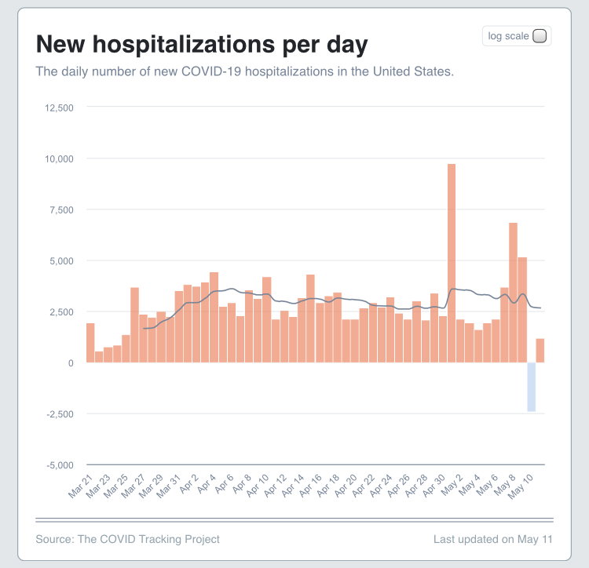
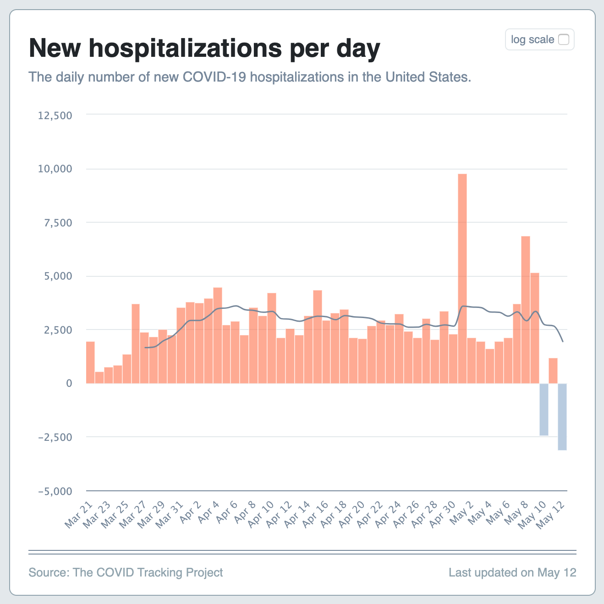
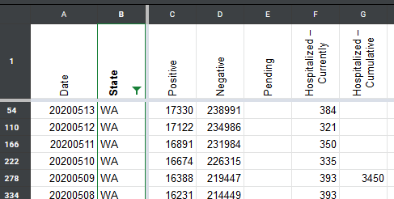
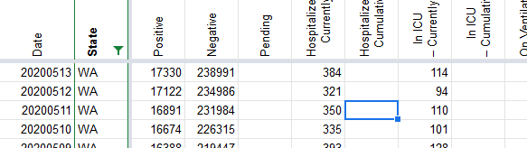
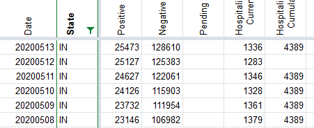
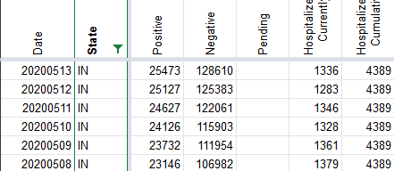

New hospitalizations for today (5/10) is currently being reported as -2432
Issue number 403
loglow opened this issue on May 10, 2020 at 3:47 pm
Sunday, May 10 shows a very large negative number (-2432) for new hospitalizations.
Thanks @loglow . Can you send us a link for the New Hospitalizations numbers that you are seeing for May 10?
"hospitalizedIncrease":-2432

This is not looking so great…
Another large negative number (-3120) is being reported for hospitalizedIncrease on 5/12.
I’m not sure why this is happening, but it seems like this number should never be negative.
If the problem is in previous days reporting, then shouldn’t the values be retroactively corrected?
I corrected the issue for the WA hospitalizations historic data as per @dpthurst’s comment.
BEFORE 
AFTER 
The issue on 5/12 was that cum hosp in Indiana were deleted for one day. When the decision was reversed, historical data was not corrected. I corrected that as well.
BEFORE 
AFTER 
After today’s data publish, these two issues should be corrected
WA cumulative hospitalizations yesterday (5/9) were entered as 3,450, and should have been reported as no data. That may account for part of this.